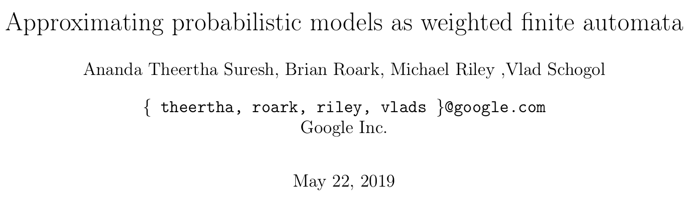

Induces a distribution over finite words $\mathbb{D} : \Sigma^* \to [0,1]$
Angluin's style learning
Target: unknown function $f$
A learner and a teacher
membership: the learner can choose $w \in \Sigma^*$ and ask the teacher for $f(w)$
equivalence: the learner can submit a hypothesis automaton $\mathcal{A}$ to the teacher, who agrees or gives a word $w$ such that
$f(w) \neq \mathcal{A}(w)$
Learning a distribution
Target: unknown distribution $\mathcal{D}$
Input: a set of words $w_1,\dots,w_n$ drawn iid with $\mathcal{D}$, and two parameters $\varepsilon,\delta$
Output: a distribution $\mathcal{D'}$ such that
$$\text{Probability}( | \mathcal{D} - \mathcal{D'} | \le \varepsilon ) \ge 1 - \delta$$
Ideally: complexity polynomial in $n$, $\text{size}(\mathcal{D})$, $\frac{1}{\varepsilon}$, $\frac{1}{\delta}$
Automata Learning
over words
Hankel matrix
Let $f : \Sigma^* \to \mathbb{R}$.
The Hankel matrix of $f$ is the bi-infinite matrix $H_f \in \mathbb{R}^{\Sigma^* \times \Sigma^*}$ defined by
$$H_f(u,v) = f(uv)$$
Theorem: (Fliess '74)
Any automaton recognising $f$ has at least $\text{rank}(H_f)$ many states,
There (effectively!) exists an automaton recognising $f$ with $\text{rank}(H_f)$ many states.
A polynomial time algorithm
Theorem: (Beimel, Bergadano, Bshouty, Kushilevitz, Varricchio, 2000) Weighted automata are efficiently learnable.
Key idea: use a partial Hankel matrix as data structure!
Invariant: maintain $X,Y$ set of words such that $H_f(X,Y)$ has full rank
Extending the matrix
Learning procedure:
Using $H_f(X,Y)$, construct a hypothesis automaton $\mathcal{A}$ and submit it to the teacher
Using the counter-example, construct $X' = X \cup \{u\}$ and $Y' = Y \cup \{v\}$ such that $H_f(X',Y')$ has full rank
Applications
Best algorithm to learn deterministic (boolean) automata
Best algorithm to learn boolean circuits
Best algorithm to learn polynomials
Best algorithm to learn boolean formulas

Learning Probabilistic Automata
If we learn it as a weighted automaton, the learned object is not probabilistic!
Many hardness results (computational complexity and using cryptographic assumptions)
for both Angluin style and distribution learning
The same solution was discovered many times: residual automata!
Matrix Factorisations
Let $H \in \mathbb{R}^{n \times m}$.
A factorisation of size $d$ is $H = A W$ where $A \in \mathbb{R}^{n \times d}$ and $W \in \mathbb{R}^{d \times m}$
non-negative if the entries of $A$ and $W$ are non-negative
residual if the rows of $W$ are rows of $M$
rank of $H$: smallest factorisation of $H$
non-negative rank of $H$: smallest non-negative factorisation of $H$
residual rank of $H$: (insert your guess)
Residual automata
Residual assumption: for every state $q$, there exists a word (anchor) $w$ which characterises $q$
Corollary: (Arora, Ge, Kannan, and Moitra OR Stratos, Collins and Hsu) Probabilistic residual automata are efficiently learnable
NOT a theorem:
Any probabilistic automaton recognising $f$ has at least $\text{non-negative rank}(H_f)$ many states,
There exists a probabilistic automaton recognising $f$ with $\text{non-negative rank}(H_f)$ many states.
(Anyway the non-negative rank is NP-hard to compute)
Theorem:
The result above holds for residual probabilistic automata
Theorem: (Arora, Ge, Kannan, and Moitra) The non-negative residual rank can be computed in polynomial time
Very elegant algorithm that no one uses, everyone uses a greedy algorithm with no theoretical guarantees
Bottom line: the Hankel matrix approach above extends to learning probabilistic residual automata
Automata Learning
over trees
Context-free Grammar Learning
Probabilistic context-free grammars
$$S \rightarrow 2 SS + 7 a\ S\ b + (-1) \varepsilon$$
A WCFG induces a function over finite words $f : \Sigma^* \to \mathbb{R}$
$$S \rightarrow \frac{1}{2} SS + \frac{1}{3} a\ S\ b + \frac{1}{6} \varepsilon$$
A PCFG induces a distribution over finite words $\mathbb{D} : \Sigma^* \to [0,1]$
Learning PCFGs
Input: a set of words $w_1,\dots,w_n$ drawn iid with $\mathcal{D}$, and two parameters $\varepsilon,\delta$
Output: a distribution $\mathcal{D'}$ such that
$$\text{Probability}( | \mathcal{D} - \mathcal{D'} | \le \varepsilon ) \ge 1 - \delta$$
Key difficulty: Learn from words only.
It is easy if we observe derivations trees
Main result
Theorem: (F., Clark) Probabilistic residual (+ extra conditions) context-free grammars are (not so efficiently) learnable
Inside and Outside values for WCFGs
Let $A$ non-terminal in a WCFG
Inside value:
$$I(A) = \sum_{w \in \Sigma^+} \text{Probability}(\text{$w$ generated from $A$})$$
Outside value:
$$O(A) = \sum_{u,v \in \Sigma^*} \text{Probability}(\text{$uAv$ generated from $S$})$$
Parameterisation
$I(S) = 1$: the WCFG defines a probability distribution
Expectation:
$\mathbb{E}(A)$ is the expected number of occurrences of $A$ in a derivation
Fact:
$$\mathbb{E}(A) = I(A) \cdot O(A)$$
Re-parameterisation
$$\mathbb{E}(A) = I(A) \cdot O(A)$$
Definition:
for all $A$, $I(A) = 1$: PCFG (top down process)
Definition:
for all $A$, $O(A) = 1$: BUWCFG (bottom up process)
Theorem:
There is a bijection between the classes of PCFG and BUWCFG
Observables
For PCFG:
$$\theta(A \rightarrow a) = \frac{\mathbb{E}(A \rightarrow a)}{\mathbb{E}(A)}$$
$$\theta(A \rightarrow BC) = \frac{\mathbb{E}(A \rightarrow BC)}{\mathbb{E}(A)}$$
For BUWCFG:
$$\theta(A \rightarrow a) = \mathbb{E}(A \rightarrow a)$$
$$\theta(A \rightarrow BC) = \frac{\mathbb{E}(A \rightarrow BC)}{\mathbb{E}(B) \mathbb{E}(C)}$$
First condition: residual
Residual: for all non-terminal $A$, there exists a terminal $a$ such that $A \rightarrow a$ and
if $B \rightarrow a$ then $B = A$
Intuitively: allows us to choose the set of non-terminals through matrix factorisation
Second condition: ambiguity
Local ambiguity: every production has a non-ambiguous context
Intuitively: ensures convergence (from below) of the parameters
Third condition: maximality
Local ambiguity: adding any rule strictly augments the language (of underlying CFG)
Intuitively: ensures convergence (from above) of the parameters